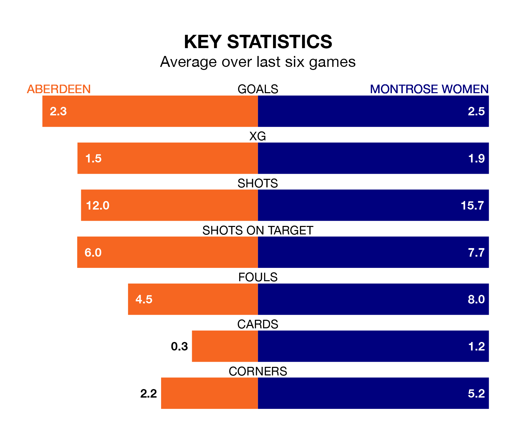

Aberdeen host Montrose Women at the Balmoral Stadium on late Tuesday on the back of three consecutive wins in SWPL 1.
Aberdeen have picked up 12 points from their last six games, and they face a Montrose side who have lost their last two matches, and collected the same number of points from the last possible 18.
In Bayley Hutchison, Aberdeen have the league's most on-form striker so far this season. She has notched 24 goals in 27 appearances.
Her goal rate of one every 97 minutes is much quicker than that of Jade McLaren, Montrose's top scorer with a goal every 268 minutes, and a total of nine goals in 27 games.
With 33 goals in 27 games so far this season, the visitors are the league's third-lowest scorers with 1.2 goals per game. And they are conceding more than average, letting in 93 goals at a rate of 3.4 per game.
The home side are also below average scorers, with 1.7 goals per game, compared to a league average of 2.1. They have conceded 3.0 goals per game.
Montrose are ninth in the table after 27 games, of which they have won six and drawn four, earning 22 points.
Aberdeen are two places ahead of Montrose in seventh, with 12 wins and one draw putting them on 37 points.
In the last three years, Aberdeen and Montrose have played each other on three occasions. Aberdeen won all of them.
Their last meeting was on April 17, when Aberdeen won 3-2 away.
Aberdeen's last match was on April 21, a 5-1 win against Dundee United Women, with Hutchison (three), Eilidh Shore and Hannah Stewart getting the goals for Aberdeen.
Montrose lost 2-1 against Motherwell Women last time out, also on April 21, with Demi Taylor on the scoresheet.
Updated: 07:59 (UTC), 26/04/24